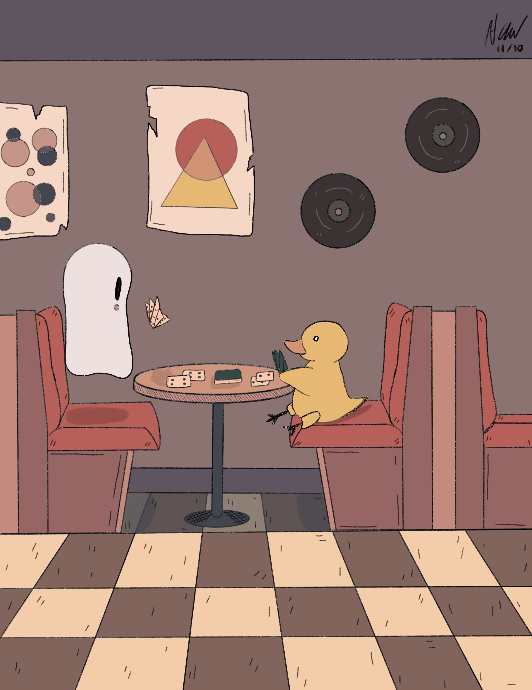

Lab 8- CSS Selectors
Amanda Auld
CST251 Section 01
CST251 Section 01
Challenge
The purpose of this lab was to try out the different CSS Selectors. We attempted to style every element of a specific class, a specific element with a class name, more than one element at a time, an element inside another element, and the hover feature of an image.
Problem
We ran into some issues when trying to specify the element(s) we wanted to style in our stylesheet. We referred back to the notes, used W3Schools, and shared our screens when we got stuck.
Result
We have a web page where we styled, specific elements, all the elements in a class, an image, and multiple elements at once. We now have a better understanding of how to create a CSS stylesheet and CSS selectors.